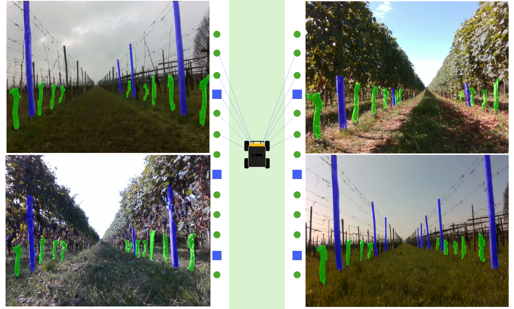

VinePT-Map: Pole-Trunk Semantic Mapping for
Resilient Autonomous Robotics in Vineyards
1 Department of Electronics and Telecommunications, Politecnico di Torino, Italy
3 PoliTO Interdepartmental Centre for Service Robotics (PIC4SeR)

Persistent Semantic Landmarks
Mapping vine trunks and support poles across multiple seasons for robust autonomous navigation.
Abstract
Reliable long-term deployment of autonomous robots in agricultural environments remains challenging due to perceptual aliasing, seasonal variability, and the dynamic nature of crop canopies. Vineyards, characterized by repetitive row structures and significant visual changes across phenological stages, represent a pivotal field challenge, limiting the robustness of conventional feature-based localization and mapping approaches. This paper introduces VinePT-Map, a semantic mapping framework that leverages vine trunks and support poles as persistent structural landmarks to enable season-agnostic and resilient robot localization. The proposed method formulates the mapping problem as a factor graph, integrating GPS, IMU, and RGB-D observations through robust geometrical constraints that exploit vineyard structure. An efficient perception pipeline based on instance segmentation and tracking, combined with a clustering filter for outlier rejection and pose refinement, enables accurate landmark detection using low-cost sensors and onboard computation. To validate the pipeline, we present a multi-season dataset for trunk and pole segmentation and tracking. Extensive field experiments conducted across diverse seasons demonstrate the robustness and accuracy of the proposed approach, highlighting its suitability for long-term autonomous operation in agricultural environments.
Methodology Overview
1. Multimodal Inputs
Fusion of consumer-grade RGB-D camera data, IMU preintegration, and RTK-GPS fixes.
2. Visual Perception
Real-time instance segmentation (YOLOv8-seg) and robust multi-object tracking (BoT-SORT) of poles and trunks.
3. Semantic Mapping
Factor graph optimization via iSAM2. Includes deferred landmark commitment, outlier rejection, and spatial clustering.
Key Contributions
-
VinePT-Map Framework: A novel factor graph-based methodology mapping permanent structural elements to reduce complexity and increase resilience against seasonal aliasing.
-
Multi-Season Dataset: A custom dataset for instance segmentation and tracking spanning phenological stages from February (bare stems) to September (full foliage).
-
Robust Perception Pipeline: Efficient onboard segmentation, precise reference point projection, and a clustering filter for robust outlier rejection.
-
Field Validation: Comprehensive real-world experiments with a ClearPath Husky rover, achieving an overall tracking Association Accuracy (AssA) up to 95.1% in challenging summer conditions and sub-0.3m Mean Absolute Error mapping precision.
Citation
@article{audrito2026vineptmap,
title={VinePT-Map: Pole-Trunk Semantic Mapping for Resilient Autonomous Robotics in Vineyards},
author={Audrito, Giorgio and Martini, Mauro and Navone, Alessandro and Galluzzo, Giorgia and Chiaberge, Marcello},
journal={arXiv preprint arXiv:2603.05070},
year={2026}
}